102 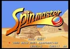
Spin Master que B salte y C (en R) lance el ataque especial que limpia la pantalla. Mantener A carga el disparo. Comprobar si D hace algo.
Botones A · Atacar con el yoyó (pulsar rápido: ráfaga · mantener: disparo cargado) B · Saltar (⚠️ confirmar) C · Ataque especial (⚠️ confirmar) Empezar Meter una moneda + Salir del juego
Ver ficha y guía → ✅ Bien ⚠️ Problema ⏭️ Luego
103 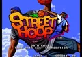
Street Hoop que A tire o mate (en defensa, tapone) y B pase (en defensa, robe). C y D no se usan.
Botones A · Tirar o hacer un mate · En defensa: taponar B · Pasar · En defensa: robar Empezar Meter una moneda + Salir del juego
Ver ficha y guía → ✅ Bien ⚠️ Problema ⏭️ Luego
104 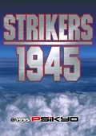
Strikers 1945 que el botón 2 lance la bomba y que, al mantener el 1 y soltarlo, salga el disparo cargado. Es un juego vertical: ver cómo se ve en la pantalla.
Botones Botón 1 · Disparar (mantener y soltar: disparo cargado ⚠️) Botón 2 · Lanzar una bomba Empezar Meter una moneda + Salir del juego
Ver ficha y guía → ✅ Bien ⚠️ Problema ⏭️ Luego
105 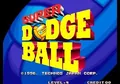
Super Dodge Ball con balón: A tira, B pasa, C salta y D amaga; sin balón: A atrapa, B se agacha, C salta y D provoca. A + B sin balón carga la barra.
Botones Ver ficha y guía → ✅ Bien ⚠️ Problema ⏭️ Luego
106 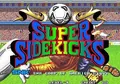
Super Sidekicks que A tire y B pase (sin balón, A entra en plancha y B hace la entrada). C y D no se usan.
Botones A · Chutar largo o tirar · Sin balón: entrar en plancha B · Pasar · Sin balón: hacer una entrada Empezar Meter una moneda + Salir del juego
Ver ficha y guía → ✅ Bien ⚠️ Problema ⏭️ Luego
107 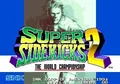
Super Sidekicks 2 - The World Championship que A tire, B haga el pase alto y C el pase corto (sin balón, C cambia de jugador). D no se usa.
Botones A · Tirar · Pase raso · Sin balón: entrar en plancha B · Pase alto · Sin balón: hacer una entrada (o falta) C · Pase corto · Sin balón: cambiar de jugador Empezar Meter una moneda + Salir del juego
Ver ficha y guía → ✅ Bien ⚠️ Problema ⏭️ Luego
108 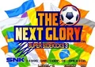
Super Sidekicks 3 - The Next Glory que A tire, B haga el pase alto y C el pase corto (sin balón, C cambia de jugador). D no se usa.
Botones A · Tirar · Pase raso · Sin balón: entrar en plancha B · Pase alto · Sin balón: hacer una entrada (o falta) C · Pase corto · Sin balón: cambiar de jugador Empezar Meter una moneda + Salir del juego
Ver ficha y guía → ✅ Bien ⚠️ Problema ⏭️ Luego
109 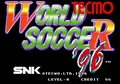
Tecmo World Soccer '96 averiguar qué hace cada botón. Según Wikipedia, hay pase, pase cruzado (botón propio) y un regate rápido.
Botones A · ⚠️ Por averiguar B · ⚠️ Por averiguar C · ⚠️ Por averiguar Empezar Meter una moneda + Salir del juego
Ver ficha y guía → ✅ Bien ⚠️ Problema ⏭️ Luego
110 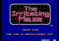
The Irritating Maze / Ultra Denryu Iraira Bou comprobar si el cursor se mueve con el joystick (la recreativa tenía una bola) y si algún botón hace algo.
Botones A · ⚠️ Por averiguar B · ⚠️ Por averiguar Empezar Meter una moneda + Salir del juego
Ver ficha y guía → ✅ Bien ⚠️ Problema ⏭️ Luego
111 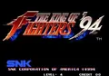
The King of Fighters '94 que A + B esquive y que C + D dé el golpe que derriba. Mantener A + B + C carga la barra de poder.
Botones A · Dar un puñetazo flojo B · Dar una patada floja C · Dar un puñetazo fuerte D · Dar una patada fuerte Empezar Meter una moneda + Salir del juego
Ver ficha y guía → ✅ Bien ⚠️ Problema ⏭️ Luego
112 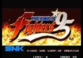
The King of Fighters '95 que A + B esquive, C + D dé el golpe que derriba y B + C provoque.
Botones A · Dar un puñetazo flojo B · Dar una patada floja C · Dar un puñetazo fuerte D · Dar una patada fuerte + B + C · Provocar Empezar Meter una moneda + Salir del juego
Ver ficha y guía → ✅ Bien ⚠️ Problema ⏭️ Luego
113 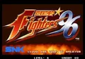
The King of Fighters '96 que A + B ruede para esquivar y C + D dé el golpe que derriba.
Botones A · Dar un puñetazo flojo B · Dar una patada floja C · Dar un puñetazo fuerte D · Dar una patada fuerte Empezar Meter una moneda + Salir del juego
Ver ficha y guía → ✅ Bien ⚠️ Problema ⏭️ Luego
114 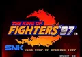
The King of Fighters '97 que A + B esquive y C + D dé el golpe que derriba. Al elegir equipo se escoge el estilo (Advanced o Extra).
Botones A · Dar un puñetazo flojo B · Dar una patada floja C · Dar un puñetazo fuerte D · Dar una patada fuerte Empezar Meter una moneda + Salir del juego
Ver ficha y guía → ✅ Bien ⚠️ Problema ⏭️ Luego
115 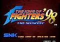
The King of Fighters '98 - The Slugfest que A + B esquive y C + D dé el golpe que derriba. Al elegir equipo se escoge el estilo (Advanced o Extra).
Botones A · Dar un puñetazo flojo B · Dar una patada floja C · Dar un puñetazo fuerte D · Dar una patada fuerte Empezar Meter una moneda + Salir del juego
Ver ficha y guía → ✅ Bien ⚠️ Problema ⏭️ Luego
116 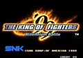
The King of Fighters '99 - Millennium Battle que A + B esquive y C + D dé el golpe que derriba. Comprobar cómo se llama al Striker.
Botones A · Dar un puñetazo flojo B · Dar una patada floja C · Dar un puñetazo fuerte D · Dar una patada fuerte Empezar Meter una moneda + Salir del juego
Ver ficha y guía → ✅ Bien ⚠️ Problema ⏭️ Luego
117 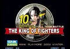
The King of Fighters 10th Anniversary (The King of Fighters 2002 bootleg) Que A + B esquive y que C + D dé el golpe que derriba. Hay que comprobar qué cambia esta versión pirata.
Botones A · Dar un puñetazo flojo B · Dar una patada floja C · Dar un puñetazo fuerte D · Dar una patada fuerte Empezar Meter una moneda + Salir del juego
Ver ficha y guía → ✅ Bien ⚠️ Problema ⏭️ Luego
118 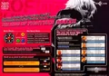
The King of Fighters 10th Anniversary 2005 Unique que A + B esquive y que C + D dé el golpe que derriba. Hay que comprobar qué cambia esta versión pirata.
Botones A · Dar un puñetazo flojo B · Dar una patada floja C · Dar un puñetazo fuerte D · Dar una patada fuerte + A + B · Esquivar rodando + C + D · Golpe que derriba Empezar Meter una moneda + Salir del juego
Ver ficha y guía → ✅ Bien ⚠️ Problema ⏭️ Luego
119 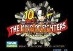
The King of Fighters 10th Anniversary Extra Plus Que A + B esquive y que C + D dé el golpe que derriba. Hay que comprobar qué cambia esta versión pirata.
Botones A · Dar un puñetazo flojo B · Dar una patada floja C · Dar un puñetazo fuerte D · Dar una patada fuerte Empezar Meter una moneda + Salir del juego
Ver ficha y guía → ✅ Bien ⚠️ Problema ⏭️ Luego
120 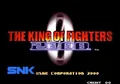
The King of Fighters 2000 (NGM-2570 ~ NGH-2570) Que A + B esquive y que C + D dé el golpe que derriba. Al elegir equipo se escoge también el apoyo (striker ): ⚠️ no he encontrado con qué botón se le llama.
Botones A · Dar un puñetazo flojo B · Dar una patada floja C · Dar un puñetazo fuerte D · Dar una patada fuerte Empezar Meter una moneda + Salir del juego
Ver ficha y guía → ✅ Bien ⚠️ Problema ⏭️ Luego
121 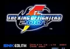
The King of Fighters 2001 Que A + B esquive y que C + D dé el golpe que derriba. Antes de cada combate se elige cuántos pelean y cuántos ayudan como apoyo (striker ).
Botones A · Dar un puñetazo flojo B · Dar una patada floja C · Dar un puñetazo fuerte D · Dar una patada fuerte Empezar Meter una moneda + Salir del juego
Ver ficha y guía → ✅ Bien ⚠️ Problema ⏭️ Luego
122 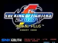
The King of Fighters 2001 Plus que A + B esquive y que C + D dé el golpe que derriba. Hay que comprobar qué cambia esta versión pirata.
Botones A · Dar un puñetazo flojo B · Dar una patada floja C · Dar un puñetazo fuerte D · Dar una patada fuerte + A + B · Esquivar rodando + C + D · Golpe que derriba Empezar Meter una moneda + Salir del juego
Ver ficha y guía → ✅ Bien ⚠️ Problema ⏭️ Luego
123 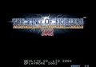
The King of Fighters 2002 Que A + B esquive y que C + D dé el golpe que derriba. Con poca vida y barras guardadas salen los supermovimientos MAX2.
Botones A · Dar un puñetazo flojo B · Dar una patada floja C · Dar un puñetazo fuerte D · Dar una patada fuerte Empezar Meter una moneda + Salir del juego
Ver ficha y guía → ✅ Bien ⚠️ Problema ⏭️ Luego
124 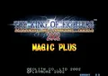
The King of Fighters 2002 Magic Plus (bootleg) Que A + B esquive y que C + D dé el golpe que derriba. Hay que comprobar qué cambia esta versión pirata.
Botones A · Dar un puñetazo flojo B · Dar una patada floja C · Dar un puñetazo fuerte D · Dar una patada fuerte Empezar Meter una moneda + Salir del juego
Ver ficha y guía → ✅ Bien ⚠️ Problema ⏭️ Luego
125 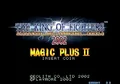
The King of Fighters 2002 Magic Plus II (bootleg) Que A + B esquive y que C + D dé el golpe que derriba. Hay que comprobar qué cambia esta versión pirata.
Botones A · Dar un puñetazo flojo B · Dar una patada floja C · Dar un puñetazo fuerte D · Dar una patada fuerte Empezar Meter una moneda + Salir del juego
Ver ficha y guía → ✅ Bien ⚠️ Problema ⏭️ Luego
126 The King of Fighters 2002 Plus (bootleg set 1) Que A + B esquive y que C + D dé el golpe que derriba. Hay que comprobar qué cambia esta versión pirata.
Botones A · Dar un puñetazo flojo B · Dar una patada floja C · Dar un puñetazo fuerte D · Dar una patada fuerte Empezar Meter una moneda + Salir del juego
Ver ficha y guía → ✅ Bien ⚠️ Problema ⏭️ Luego
No hay pruebas con este filtro.